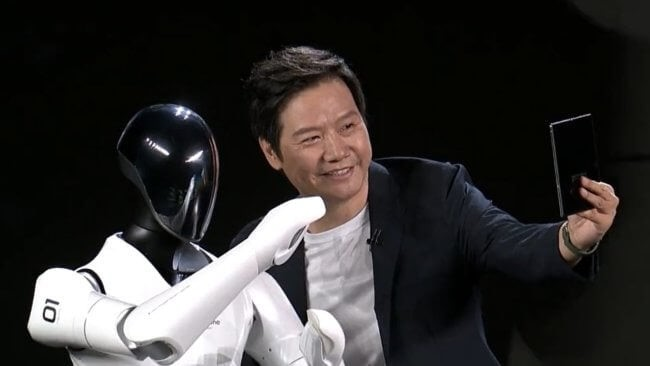

Новости о робототехнике
-
Робот CyberOne от Xiaomi
В 2021 году компания Tesla объявила, что ведет разработку робота-гуманоида для работы на заводах. Известно, что его рост составит 173 сантиметра, а масса будет достигать 57 килограммов. Вместо лица у него будет установлен дисплей, который отображает важную для окружающих людей информацию.
Во время презентации 2022 года на сцену к главе компании Лэй Цзюню вышел новый робот — его зовут CyberOne и он максимально похож на человека. У него есть голова, туловище и все конечности, поэтому он без проблем движется на двух ногах и неплохо сохраняет равновесие. Справедливости ради нужно отметить, что механизм ходьбы на данный момент является не самым лучшим, потому что робот Atlas от той же Boston Dynamics шагает гораздо увереннее и даже способен выполнять трюки (на такое не способно даже большинство людей).
Но для Xiaomi, которая больше всего известна как производитель смартфонов и фитнес-браслетов, это очень хороший результат. По словам Лэй Цзюня, робот был разработан подразделением Xiaomi Robotics Lab, которая наделила конструкцию множеством функций. Во время презентации была продемонстрирована только ходьба и способность подарить человеку цветок.